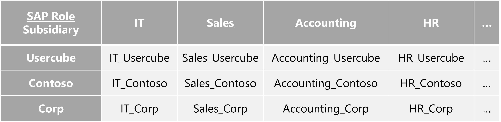
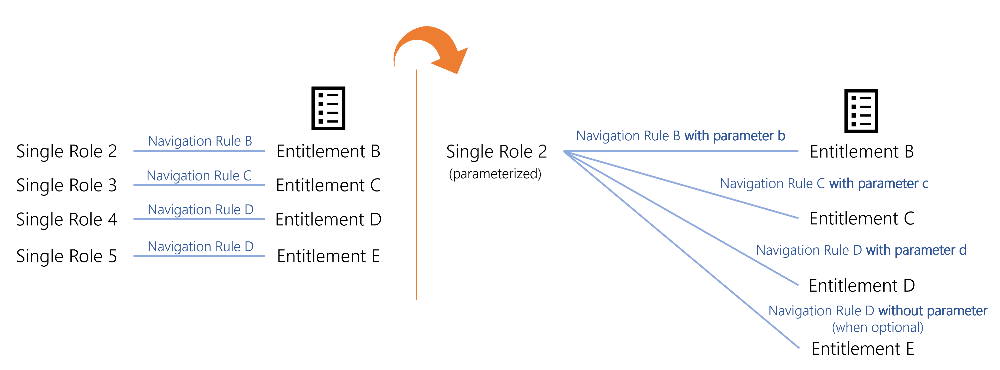
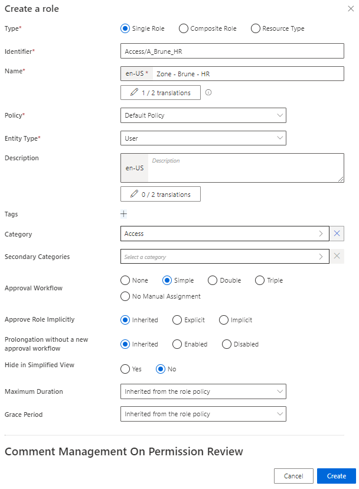
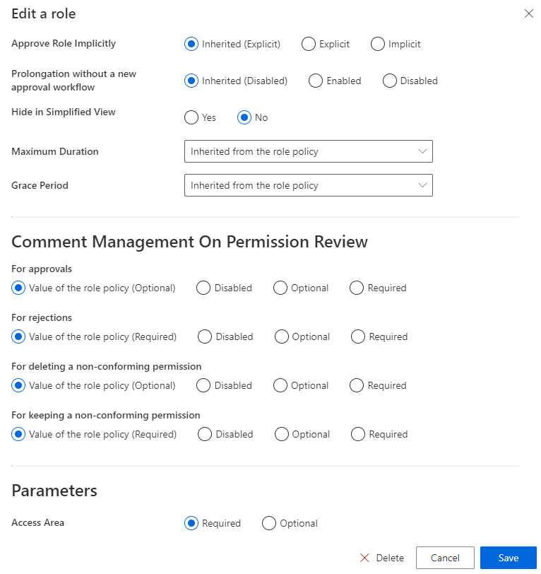
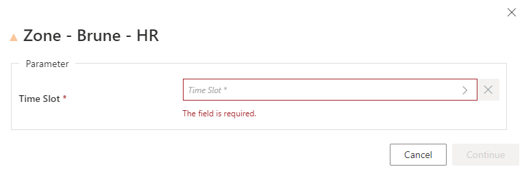
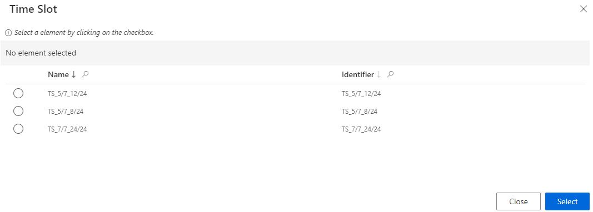
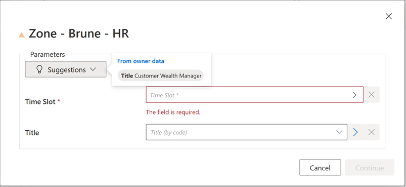

Configure a Parametrized Role
How to reduce the number of roles in the model by configuring roles with parameters.
Overview
The assignment of a role to a user gives them an entitlement, usually a group membership, thanks to a navigation rule. See the Create Roles in the Role Catalog topic for additional information.
To enable the assignment of all existing entitlements, the role model usually contains numerous roles.
For example, the SAP role can be given with slight differences according to the users' subsidiaries:

In order to reduce the number of roles, we can configure roles with parameters by inserting a criterion in the navigation rules. Thus, instead of having as many roles as entitlements (left on the schema), we can have way fewer roles (right on the schema).

In the previous example, with a parameter on the subsidiary, the number of roles would be divided by three.
By extension, a composite role that assigns a parametrized single role is parametrized too.
This way, when assigning a parametrized role, a pop-up window is displayed where the parameter must be specified.
The same thing goes with type rules instead of navigation rules when we want to assign resource types instead of entitlements.
Configure a Parametrized Role
Configure a parametrized role by proceeding as follows:
Step 1 – Create in XML a dimension corresponding to the parameter that will affect the role. See the Dimension topic for additional information.
For example, let's consider that we have many roles available on three different time slots: 8 hours a day, 12 hours a day, or 24 hours a day. We create a dimension for these time slots.
Code attributes enclosed with <> need to be replaced with a custom value before entering the script in the command line.
<Dimension Identifier="TimeSlot" DisplayName_L1="Time Slot" EntityType="Access_TimeSlot" ColumnMapping="10" IsExcludedFromRoleMining="true" />
Step 2 – Create a single role. See the Create a Role Manually topic for additional information.
Step 3 – Create one navigation rule linked to the role for each available value of the parameter. See the Create a Role Manually topic for additional information.
Here we have three navigation rules, one for each distinct time slot (dimension A). For example:

NOTE: Make sure that the corresponding dimension is specified in the right DisplayEntityType in XML to be displayed in the UI.
NOTE: It is important to note that for manually assigned roles, if a new dimension is added to the definition of the role, the assignment's dimension will not be re-calculated, and will therefore not be propagated to calculate automatic assignments.
Example Scenario — Role A was created as a composite role with no parameters a long time ago. Role A was later updated to depend on the optional parameter X and a single role rule was created to assign a single role B if a user had Role A and parameter X set to value Y.
If a user already manually had the role A, even if its dimension X (for example its department, which could be calculated) was equal to value Y, got its permissions recalculated, that person would not get the role B. Since the modification occurred after the assignment, it is understood as if the role was assigned voluntarily with dimension X unset.
However, if a user got role A assigned after the modification, and its dimension X was equal to value Y, then that user would get the role B.

Step 4 – Go back to the roles page to edit the single role from step 2, if needing to set the parameter required.
If you want Identity Manager to provide suggestions to set the parameter's value, then make sure that users' context rule specifies the dimension.
For example, with the Title dimension:
Code attributes enclosed with <> need to be replaced with a custom value before entering the script in the command line.
<ContextRule Identifier="Directory_User" DisplayName_L1="Directory_User" B0="Directory_UserRecord:Organization" B1="Directory_UserRecord:Title" B2="Directory_UserRecord:Site" B3="Directory_UserRecord:Site.Region.Country" B4="Directory_UserRecord:UserType.Category" ... Policy="Default" SourceEntityType="Directory_User" />
Verify the Parametrized Role
In order to verify the process, request manually the parametrized role for a test user. Some additional pop-ups are displayed to set a value for the role's parameter. See the Request Entitlement Assignment topic for additional information.
In our example:


If the dimension is specified in the users' context rule, then Identity Manager will provide suggestions.

For example, concerning the Title dimension mentioned above.